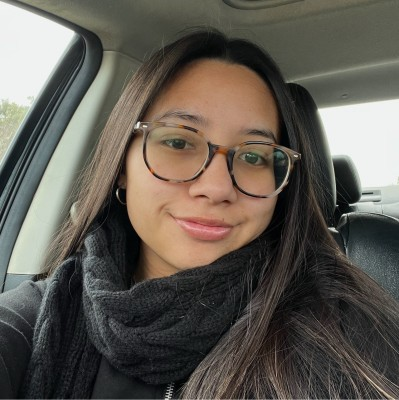
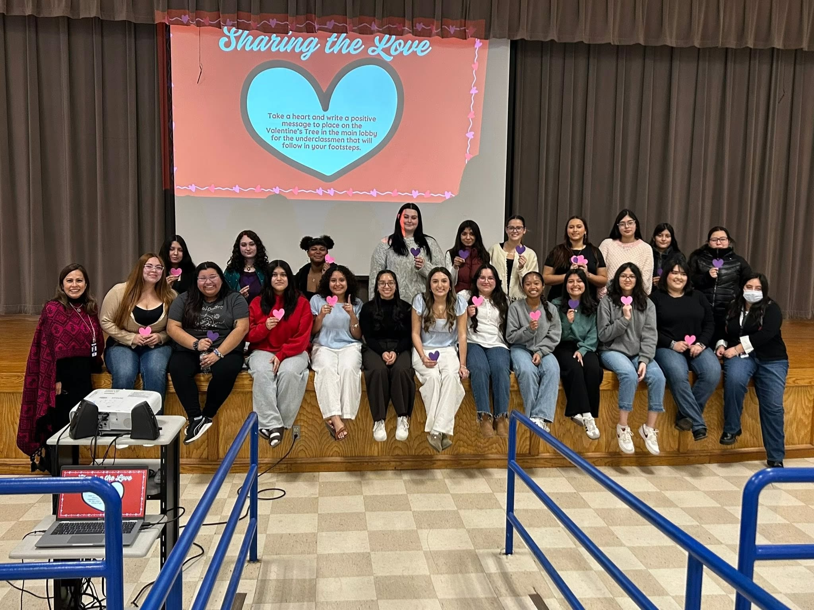

Web Services
Student Worker
I develop internal web applications, build database-backed forms, and troubleshoot workflows for the university’s Web Services team.
Suggestion Form GeneratorFaculty Profile Image Crop Tool

I’m a computer science student at Texas A&M University–San Antonio and a student worker on the university’s web development team.
Experience
Campus work, coursework, and independent projects.
I develop internal web applications, build database-backed forms, and troubleshoot workflows for the university’s Web Services team.
Web development projects completed through my computer science coursework.
Creating websites for a local accounting firm and a martial arts gym.
Community & recognition
Recognition with our ACM student chapter at JaguarAwards.
At our booth’s human slot machine, participants tried their luck for a chance to win a free item from the menu.
Volunteered and hosted talks at K–12 schools across San Antonio and Somerset, Texas.
Sharing what I’m learning

Alumna panel · Somerset, Texas
Workshop · ACM TAMUSA

Workshop · JagHacks